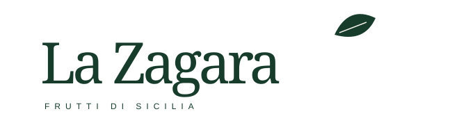
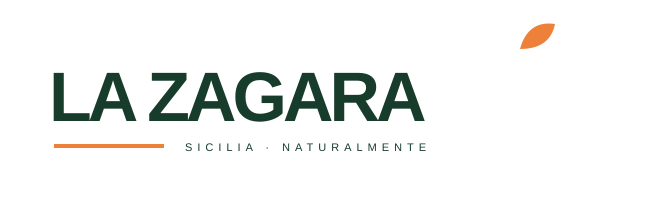
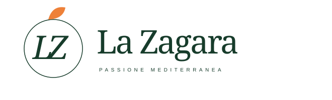

IDENTITÀ VISIVA

Elegante e autorevole. Foglia essenziale, nome protagonista.

Più deciso e commerciale. Tipografia compatta, dettaglio agrume.

Più distintivo. Monogramma per etichette, packaging e favicon.
Tre direzioni vettoriali originali · Verde profondo, avorio e accento arancio